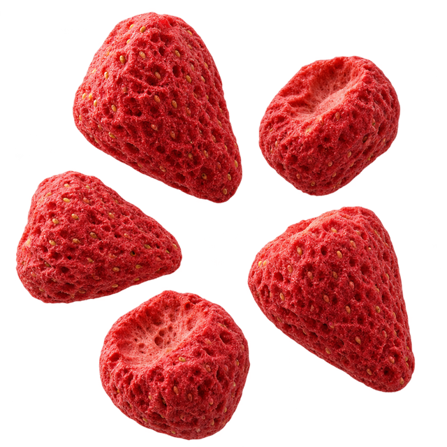
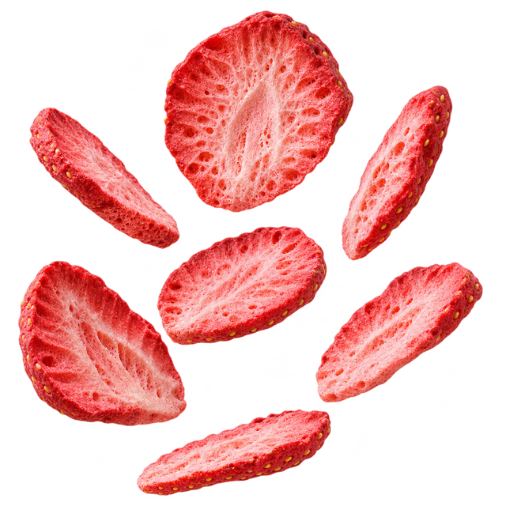
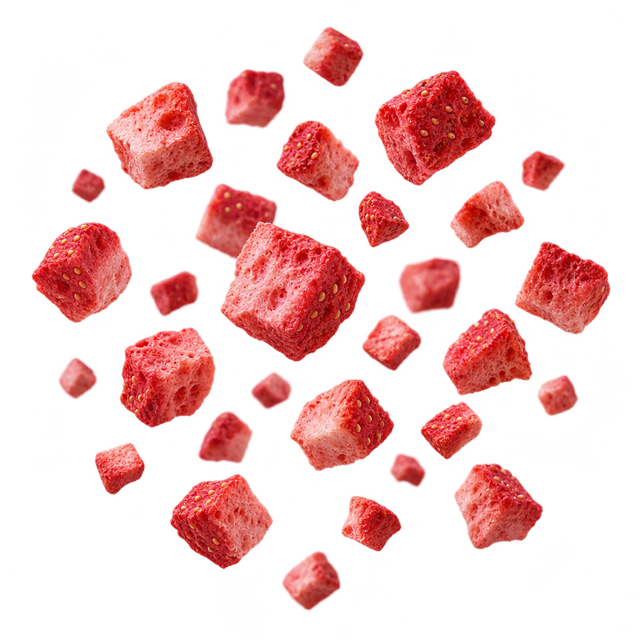
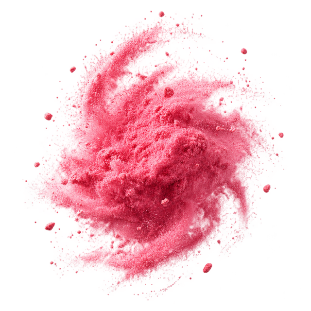

Сырьё
Ягоды и фрукты готовим к сушке целыми, кусочками или слайсами. Свежие ягоды больше чем на 80 % состоят из воды.
Сублимированные фрукты и ягоды для пищевых производств: целые, кусочки, слайсы и порошок. Сушим, фасуем и упаковываем в чистом помещении в Ельце.
Смотреть процессПринцип
Ягоды и фрукты готовим к сушке целыми, кусочками или слайсами. Свежие ягоды больше чем на 80 % состоят из воды.
Глубокая заморозка. Вода в клетках превращается в лёд, и каждая ягода фиксирует свою форму.
Вакуум ниже тройной точки воды. Лёд испаряется, минуя жидкую фазу: продукт не варится и не оседает.
Полки мягко нагреваются и забирают связанную влагу. В готовом продукте её остаётся не более 5 %.
Продукт стал в несколько раз легче и хранится без холода. Дальше - фасовка в том же чистом помещении.
Ассортимент
Ягоды и фрукты целиком, кусочками нужной фракции, слайсами и порошком. Формат подбираем под вашу линию.
Поставка - в вакуумных барьерных пакетах по 2,5 кг, в коробах
Структура
На месте льда остаются поры. Поэтому ягода хрустит, не слёживается в сухих смесях и за минуты возвращает вкус в креме, йогурте или воде.
Форматы




Производство
Собственный производственный комплекс в Ельце.
В конце года запущено сублимационное производство.
Чистое помещение: сушка, первичная фасовка и упаковка в одном контуре.
Фрукты и ягоды. Линия рассчитана и на грибы, мясо и рыбу.
Образцы и спецификация - по запросу
Спасибо! Свяжемся с вами, чтобы уточнить объёмы и отправить образцы.